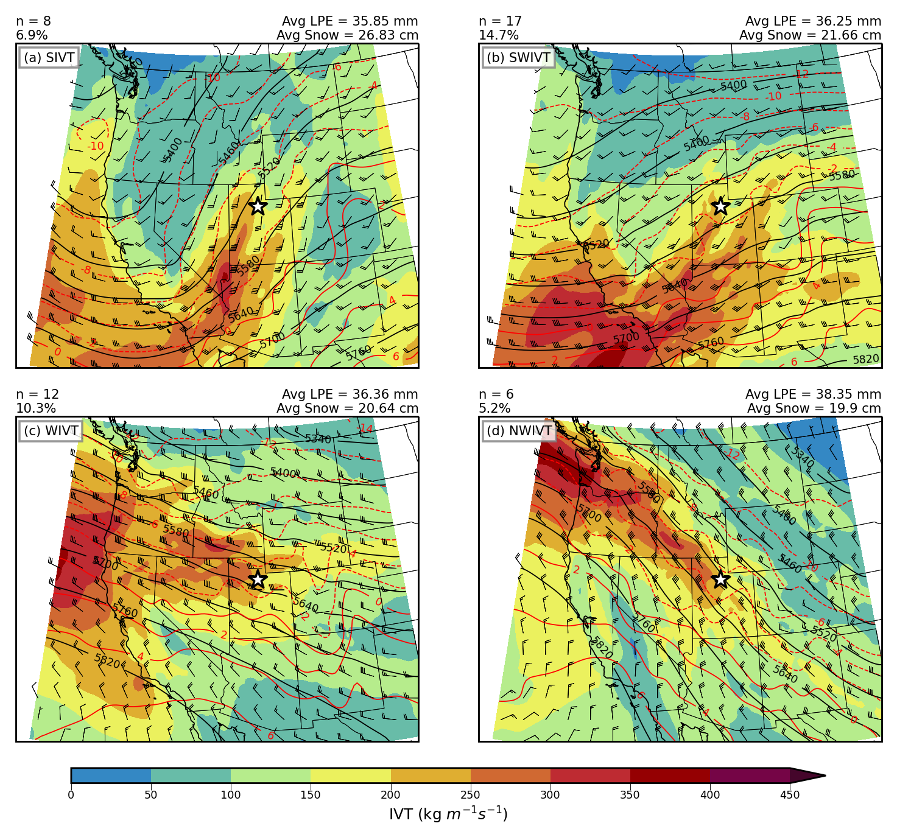
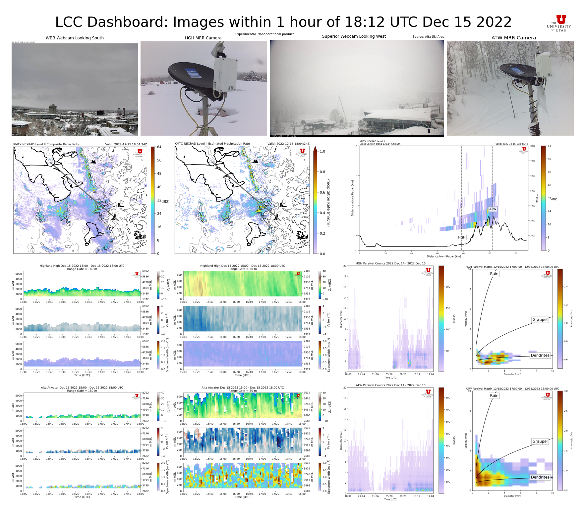
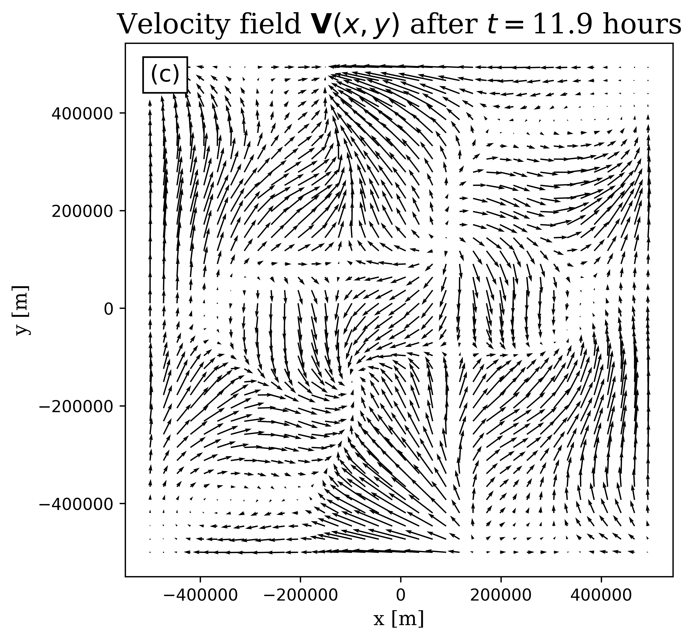
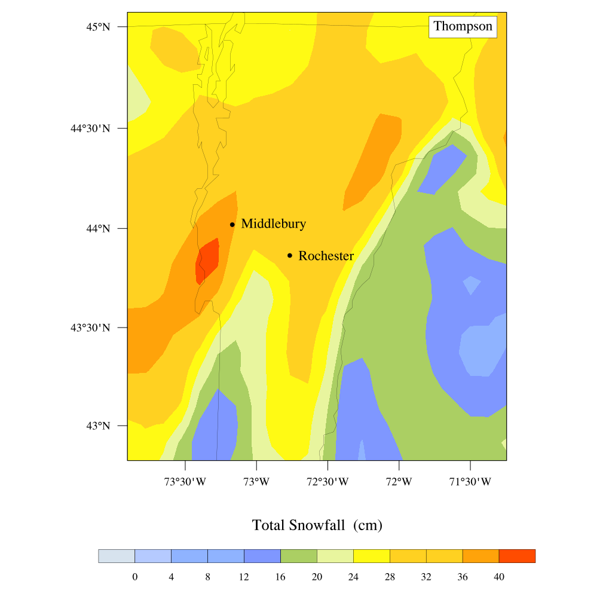
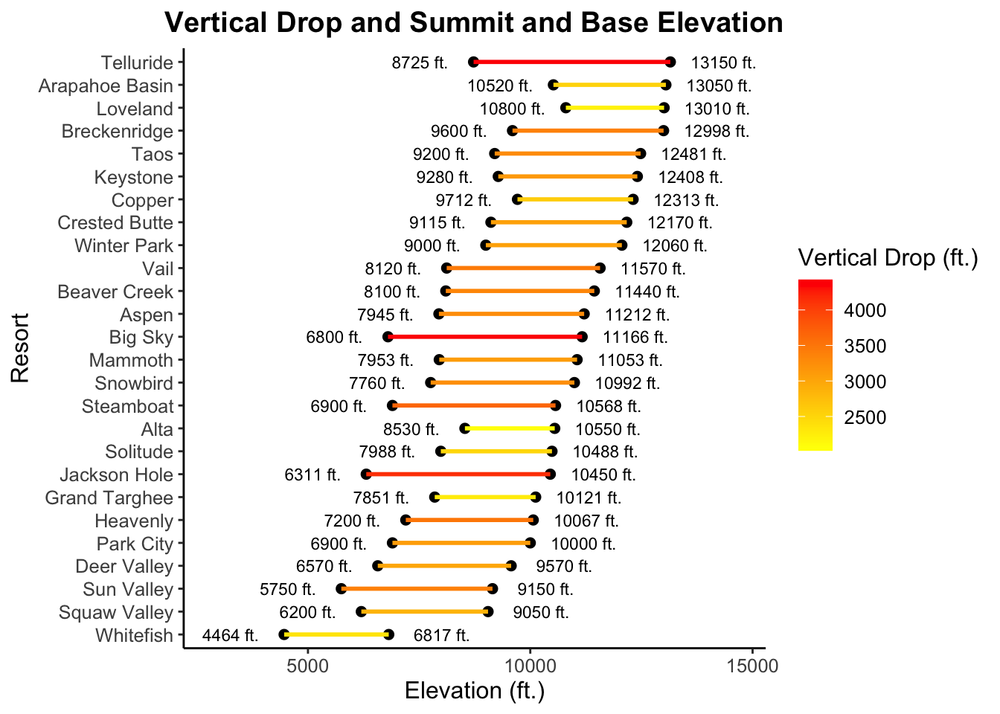

Michael
Wasserstein
Atmospheric scientist specializing in orographic precipitation and high-resolution weather modeling.
About Me
I am a PhD candidate in Atmospheric Sciences at the University of Utah, where I study orographic precipitation in Utah's Wasatch range. My research combines observational analysis, Weather Research and Forecasting (WRF) large eddy simulations (LES), and data science to understand the impact of basin-and-range terrain on precipitation in the Wasatch.
I earned my B.A. in Physics from Middlebury College in 2021, and my M.S. in Atmospheric Sciences from the University of Utah in 2023. My master's research conducted a climatology of orographic precipitation in the Wasatch range using ERA5 reanalyses and operational radar data.
Education
Ph.D. in Atmospheric Sciences
University of Utah · Salt Lake City, UT
Dissertation research on the basin and range effects of on orographic precipitation.
M.S. in Atmospheric Sciences
University of Utah · Salt Lake City, UT
Thesis: Characteristics of orographic snowfall extremes in the central Wasatch. Published in Monthly Weather Review.
B.A. in Physics with honors
Middlebury College · Middlebury, VT
Senior thesis examined microphysics parameterizations in WRF simulations of a Vermont winter storm. Minors in math and Spanish.
Selected Work

SNOWSCAPE Dashboard
Real-time operational dashboard supporting the SNOWSCAPE field campaign, displaying quasi-real-time data from multiple instruments deployed across the northern Wasatch mountains.
View dashboard
Orographic Snowfall Extremes — Wasatch
Master's research characterizing the diverse synoptic and mesoscale environments associated with extreme orographic snowfall events in the central Wasatch, published in Monthly Weather Review.
Read paper
LCC Observational Dashboard
Developed a real-time monitoring dashboard integrating webcam imagery, NEXRAD radar, Micro-Rain Radar, and Parsivel disdrometer data for Little Cottonwood Canyon field operations.
View dashboard
Shallow Water Model — Navier-Stokes
Derived the Navier-Stokes equations in a rotating reference frame, reduced them to the shallow water equations, and implemented numerical simulations of the model as undergraduate math senior work.
View report
WRF Microphysics Sensitivity Study
Investigated the impact of microphysics parameterization schemes on WRF simulations of a 2019 Vermont winter storm, comparing modeled and observed snowfall distributions.
View report
Ski Resort Preference Analysis
Data science project quantifying ski resort quality across the western U.S. using multi-attribute scoring. Includes an interactive tool for users to input personal preferences and find their ideal resort.
Explore projectGet In Touch
I'm open to research collaborations, data science and engineering opportunities, and general inquiries. Feel free to reach out.